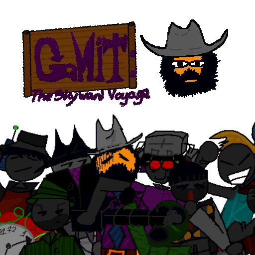
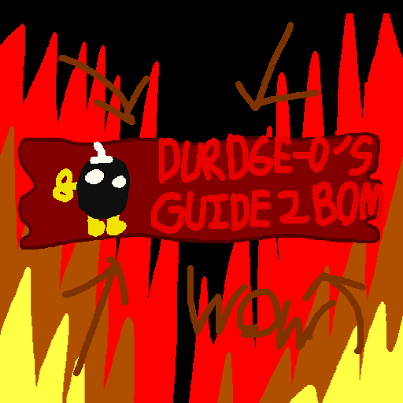

Links:
Itch.io Page
|
Review Page
|
Main Page
Games:
Kill All Magical Girls
(3 MB)
Gamit: The Skyward Voyage
(62 MB)

Wario Destroys America
(A-102 | B-270 MB)
Grand Grandman's Grand Adventure
(112 MB)
Many Mans Against You
(12.9 MB)
Durdge-o's: Guide 2 Bom
(7.3 MB)

Real Sock Man; Actual Game This Time
(2 MB)